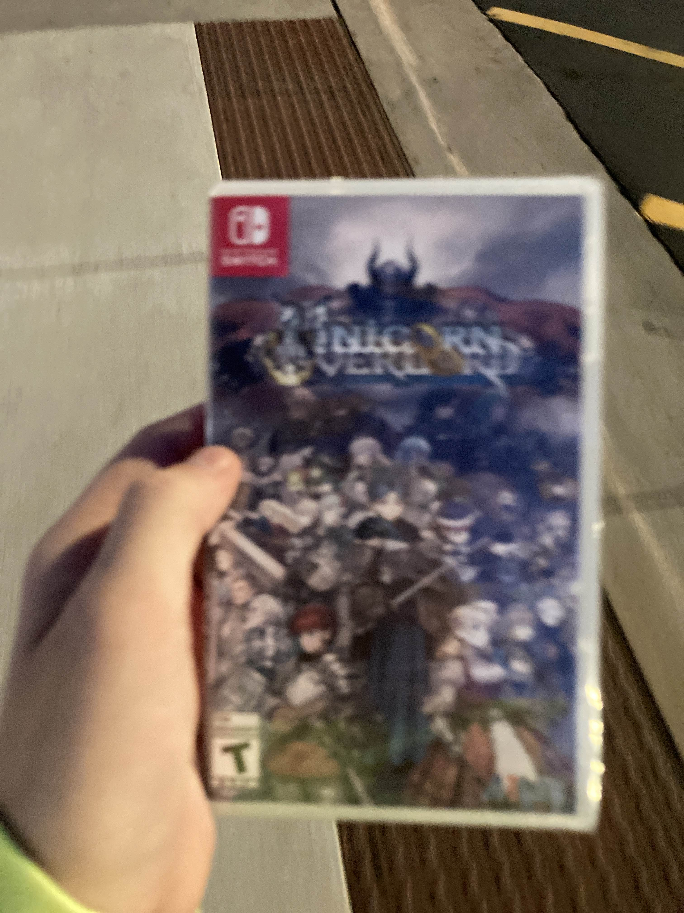

Best Buy #281. It's Best Buy #281 in Richfield, Minneapolis, MN.
I've been on a real tactics RPG kick recently. I've been talking with Tyo in the Bencord (💀💀💀☠️☠️ hell on earth zone stay the fuck away) about FE (they just played Awakening and Echoes SoV), and I've just recently played all of FE12 (weirdly good!), and, uh. I wanted to get Unicorn Overlord-pilled. So after picking up my Caplyta 42mg today, from Walmart Pharmacy, I went on an expedition to get Unicoverlorded.
I first checked the back of the Walmart, in their electronics section, and they did NOT have Unicorn Overlord. Bummer. I then drove to a GameStop, did the shameful ordeal of walking into a GameStop in current year and asking the employee if they had Unicorn Overlord, and in response they said "no". They said they could order it for pickup tomorrow, and I thanked them, said no, and walked out. I then went to my car, and looked it up, and
Rezlana on the Bencord (terrible awful no good very bad place) then recommended I go to "target or best buy?", and I checked Best Buy's website. The Best Buy nearest to me was closed for the week, but Best Buy #281, in Richfield, Minneapolis, MN,
I don't have much to compare it to, because the only other cities I've been at-all acquainted with on a real level are Tulsa and OKC, but this Best Buy was in the most Bricktown-ass area imaginable. That waterfront movie theatre in OKC by the Sonic corporate headquarters? That, but with Best Buy. Anyways, parking lot is huge and very clean. I walk into the store, and holy shit. It's massive, and open-air, and clean as hell, and lit elaborately, and has angular bits where the wall connects to the ceiling. It was fucking insane. I walked in and my mind went "this is the corporate showoff Best Buy". Like it was very, very clear.
I walked over to the Nintendo Switch area, and then checked every single box for Unicorn Overlord, and the 1 copy listed online wasn't there. I then noticed, behind the GTA Trilogy, there was a copy of Harvestella, which led me to getting on my hands and knees and looking behind every single video game box for the copy of Unicorn Overlord. I did not find it. A very nice employee came by, and I mentioned it, and she went "yeah, according to this, we have it", and then we double-teamed double-checking behind every single box for the game.
After that, she went to the back, and came back a few minutes later with the one copy of Unicorn Overlord. I thanked her, went to the checkout area, and was once-again reminded of the money poured into this Best Buy, as it had a minimalist, open-floor-plan checkout area. Reminded me of, like, a Barnes & Noble. Anyways, I paid 65 bucks plus some change, and then walked out of the store.
It was so fancy, guys. Like, goddamn. How could Micro Center ever compare.

The video game, which I FOUGHT for TOOTH-AND-NAIL.